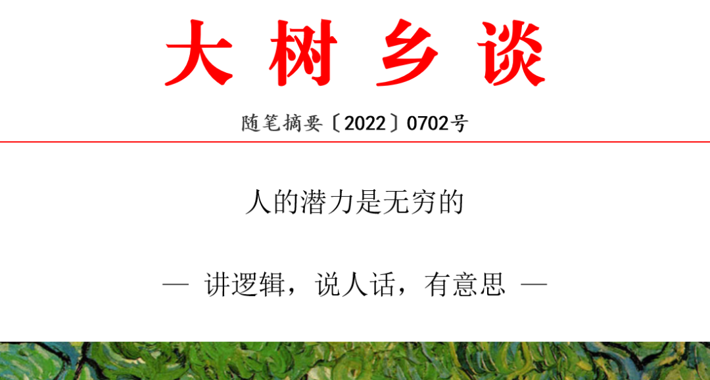

分享一些小镇自用的高效学习方法

本周分享了一篇谈个人发展的文章《全球凛冬将至，我们个人该如何做好应对？》，这是一年前《人生前35年的个人发展方法论》的姊妹篇。这几天一直有留言问小镇是如何保持每日更新的，有什么素材积累、学习思考、信息获取的方法，今天简单说一说。1、素材积累和检索。小镇以前也确实用过一些专门的APP，还付费买了会员，以前也推荐过，不过小镇现在也不用了，主要是太麻烦，不够灵活。为了整理素材还要花时间归类，检索也并不方便，还得担心资料的保存等问题。
所以小镇现在直接简化了，就用最简单的工具，但是更加个性化，这个工具就是微信自带的“文件传输助手”，这是一个非常好用的东西。小镇每天都会有很多想法，也会看到一些有意思的东西，可能是一张照片、一段话、一段视频、一份报告等等，只要看到了，小镇就直接发到“文件传输助手”，然后加几个关键词。比如说“想法”“思路”“技术”“新能源”“个人发展”等等，根据自己的情况定，搜集的比较多的时候，可以直接长按选择“多选”，然后“合并转发”到“文件传输助手”，然后增加一段小总结性质的话，再加上一些常用的关键词。
微信的检索要比一些APP迅速多了，关键看到什么东西转存都方便。2、学习思考。这个比较大，展开说的话不是几千字能说透的，就说三点。一是潜意识思考。把走路、做饭、运动等等零散的时间利用起来，把要思考的挂在潜意识里，不断地思考完善。二是减少内耗。针对人性，设计更快、更短的闭合回路，让人回收更多能量，类似游戏机制，通过这种快乐的反馈，减少对意志力的损耗，同时积累更多用于攻坚、做不喜欢但又必须完成的事情的能量。
以上两点已经在《全球凛冬将至，我们个人该如何做好应对？》详细论述了。
三是高效读书，提高系统性。书是一定要读的，必须形成自己的完整认知思维。读书重点理解作者是如何系统的论证一件事情，学习背后的思维逻辑，知识和观点其实是次要的，因为绝大多数作者说的话并不是无错的真理，要辨证的读。但无论道理如何，思辨的逻辑是可以学习的。有朋友留言说读书慢，不要紧，这是读书太少，自己的认知和知识体系不完善，多读就好。等到读得多了，读书就快了，小镇现在一本200页左右的书，只要不是太理论性的、完全没接触过的领域，一般1个小时以内就能读完，读的时候先看目录、前言，找到自己感兴趣的地方快速提炼对方的论证逻辑、核心观点和一些有意思的新知点，然后加入自己的思维体系。
大部分没必要多读，因为读书是为了完善自己，而不是为了读书而读书，高考之后的读书和高考之前是两码事。3、信息获取小镇信息获取比较杂，渠道非常多样。一般以官方信息、专业的论文、行业研究报告建立正统认知，微信公众号等自媒体文章很少看，或者仅仅快速略读，了解新的线索和不知道的事情，方便拓展。除此之外，那就更加广泛了，比如网络小说、抖音都可以成为信息的来源，反正就是为了搜集信息碎片，完善自己的知识体系，就没必要在意来自哪里了。
最后说一下效果，以小镇实践来看，还是有用的，今天看了下，微信搜索“题目”关键词，有1980条，有重复的，但起码也得近千个可以写的题目，计划最近把用过的合并、删一删。
写作的速度也越来越快，有的时候根本不想写，但也能坚持下来，每天一个人完成写作、校对、编辑、配图，2篇文章5千字左右，一般2小时就够了，感觉还能再快，所以大家也不用太担心小镇如此高频坚持不下去，如果以后忙了自然会进行调整，当然说不定小镇写作速度又上一个台阶。周末简单聊聊，大家好好休息，毕竟磨刀不误砍柴工。
其他文章推荐
■ 中央部委公务员的待遇与发展
如果喜欢，还请点赞、“在看”和关注吧 欢迎分享，让更多人发现“大树乡谈”